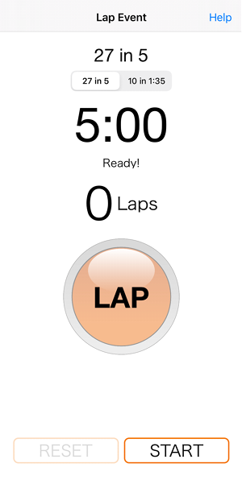

Taicco is a simple app built to acheive a simple goal, to allow a user to capture how many laps a skater is able to complete around a track in 5 minutes or in 1 minute and 35 seconds.
The 27 in 5 is one of the standard metrics on which a skater is skills assessed for the purpose of determining thier fitness and endurance levels for roller derby roastering.
Taicco includes the following features:
Loads more features to come... in the meantime, mosey on over to the App Store and download the app.